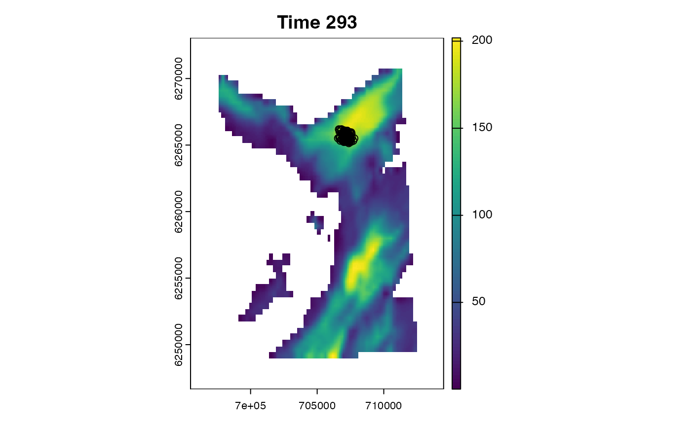
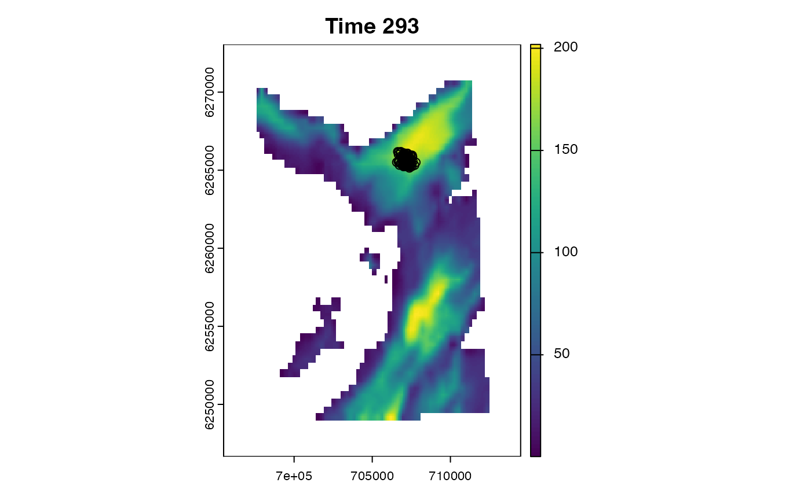

This function maps xyt data (i.e. coordinate (x, y) locations for selected time steps (t) or entire time series) and can be used to create animations.
Arguments
- .map
A
terra::SpatRasterthat defines the study area (seeglossary).- .coord
A
data.table::data.tableof coordinates, includingx,yandtimestepcolumns. Point graphical parameters (pch,col,bg,cex,lwd,lty,lwd) can be included as columns to customise point appearance. (Graphical parameters provided here silently overwrite any elements of the same name in.add_points.)- .steps
NULLor anintegervector of the time steps for which to map coordinates (e.g.,.steps = 1:5L).NULLspecifies all time steps.- .png
(optional) A named
list, passed togrDevices::png(), to save plots to file.filenameshould be the directory in which to write files. Files are named{.steps[1]}.png, {.steps[2]}.png, ..., {.steps[N]}.png..pngshould be supplied if.clis supplied via....- .add_surface, .add_points
Named
lists for plot customisation..add_surfaceis passed toterra::plot(), excludingxandmain..add_pointsis passed tographics::points(), excludingxandy.
- .add_layer
(optional) A
functionused to add additional layer(s) to the plot. The function must a single (unnamed)integervalue for the time step (even if ignored). An example function isfunction(...) points(x, y)wherexandyare (for example) receiver coordinates.- .prompt
A
logicalvariable that defines whether or not to prompt the user for input between plots. This is only used in interactive mode if.png = NULL(and there are multiple time steps).- ...
Additional argument(s) passed to
cl_lapply(), such as.cl.
Details
For each .step, terra::plot() is used to plot .map. Coordinates in .coord are added onto the grid via graphics::points(). (Note that coordinates derived from particle algorithms are equally weighted thanks to resampling.)
This function replaces flapper::pf_plot_history().
On Linux, this function cannot be used within a Julia session.
See also
Routines that coordinate time series (xyt data) include:
coa(), which implements the COA algorithm;pf_filter(), which implements particle filtering;pf_smoother_two_filter(), which implements particle smoothing;
Examples
if (patter_run(.julia = FALSE, .geospatial = TRUE)) {
#### Set up
# Define map
map <- dat_gebco()
# Define particle samples
fwd <- dat_pff()$states
bwd <- dat_pfb()$states
smo <- dat_tff()$states
# Define directories
con <- file.path(tempdir(), "patter")
frames <- file.path(con, "frame")
mp4s <- file.path(con, "mp4")
dir.create(frames, recursive = TRUE)
dir.create(mp4s, recursive = TRUE)
# Cluster options
pbo <- pbapply::pboptions(nout = 4L)
#### Example (1): Plot selected samples
# Plot particles from the forward filter
plot_xyt(.map = map,
.coord = fwd,
.steps = 1L)
# Plot particles from the backward filter
plot_xyt(.map = map,
.coord = bwd,
.steps = 1L)
# Plot smoothed particles
plot_xyt(.map = map,
.coord = smo,
.steps = 1L)
#### Example (2): Plot multiple time steps
# Specify selected steps
plot_xyt(.map = map,
.coord = smo,
.steps = 1:4L)
# Plot all steps (default: .step = NULL)
plot_xyt(.map = map,
.coord = fwd)
# Use `.prompt = TRUE`
plot_xyt(.map = map,
.coord = smo,
.steps = 1:4L,
.prompt = TRUE)
#### Example (3): Customise the background map via `.add_surface`
plot_xyt(.map = map,
.coord = smo,
.steps = 1L,
.add_surface = list(col = rev(terrain.colors(256L))))
#### Example (4): Customise the points
# Use `.add_points`
plot_xyt(.map = map,
.coord = smo,
.steps = 1L,
.add_points = list(pch = ".", col = "red"))
# Include `points()` arguments as columns in `.coord`
# * Here, we colour branches from the filter pruned by the smoother in red
fwd[, cell_id := terra::extract(map, cbind(x, y))]
bwd[, cell_id := terra::extract(map, cbind(x, y))]
smo[, cell_id := terra::extract(map, cbind(x, y))]
fwd[, col := ifelse(cell_id %in% smo$cell_id, "black", "red")]
bwd[, col := ifelse(cell_id %in% smo$cell_id, "black", "red")]
plot_xyt(.map = map,
.coord = rbind(fwd, bwd),
.steps = 1L,
.add_points = list(pch = "."))
#### Example (5): Add additional map layers
plot_xyt(.map = map,
.coord = smo,
.steps = 1L,
.add_layer = function(t) mtext(side = 4, "Depth (m)", line = -4))
#### Example (6): Write images to file
# Write images in serial
plot_xyt(.map = map,
.coord = smo,
.steps = 1:4L,
.png = list(filename = frames))
# Use a fork cluster
if (.Platform$OS.type == "unix") {
plot_xyt(.map = map,
.coord = smo,
.steps = 1:4L,
.png = list(filename = frames),
.cl = 2L,
.chunk = TRUE)
}
#### Example (7): Make animations
if (rlang::is_installed("av")) {
# There are lots of tools to create animations:
# * `av::av_encode_video()` # uses ffmpeg
# * `animation::saveVideo()` # uses ffmpeg
# * `magick::image_write_video()` # wraps av()
# * `glatos::make_video()` # wraps av()
# Helper function to open (mp4) files
Sys.open <- function(.file) {
if (.Platform$OS.type == "Windows") {
cmd <- paste("start", shQuote(.file))
} else {
cmd <- paste("open", shQuote(.file))
}
system(cmd)
}
# Use av::av_encode_video()
# * This is one of the faster options
input <- file_list(frames)
output <- file.path(mp4s, "ani.mp4")
av::av_encode_video(input, output, framerate = 10)
# Sys.open(output)
}
file_cleanup(con)
}


 



 #> `cl_lapply()` implemented on 2 core(s) using a total of 4 chunk(s) (~2 per core & progress gradations).
#> `cl_lapply()` implemented on 2 core(s) using a total of 4 chunk(s) (~2 per core & progress gradations).